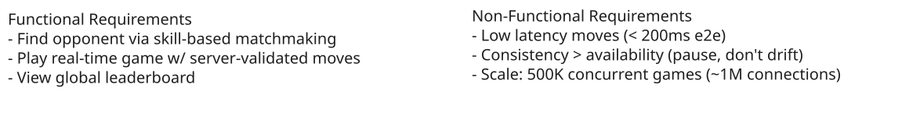
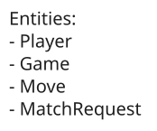
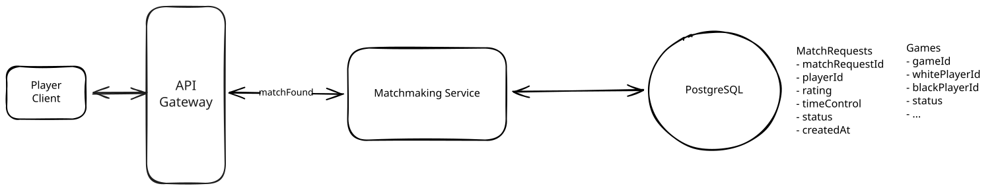
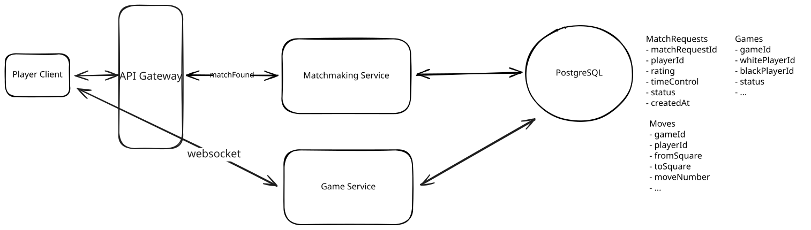
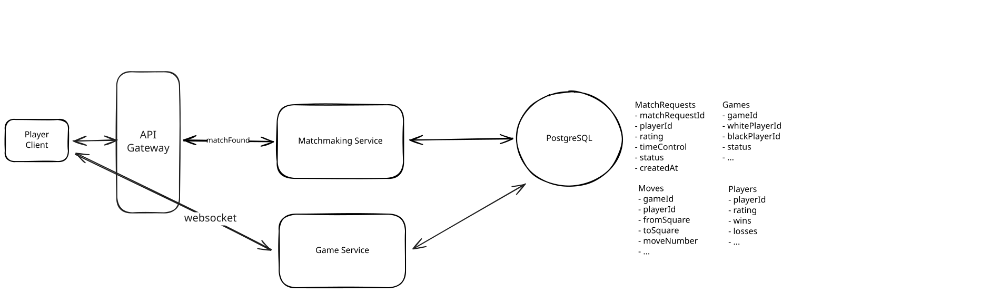
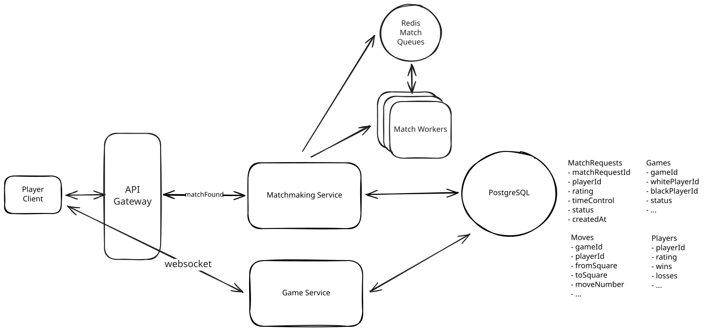
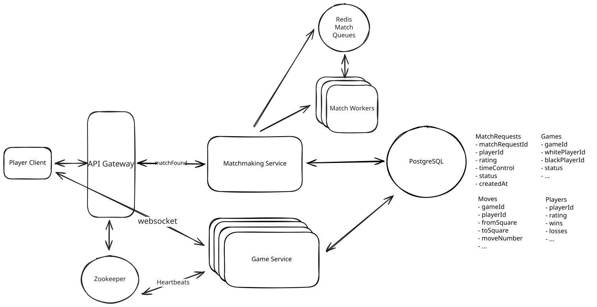
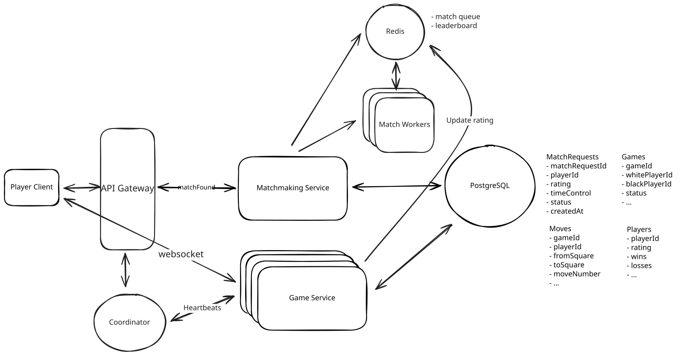

Common Problems
Online Chess
Real-time Updates
Dealing with Contention
Understanding the Problem
A quick primer if you don't play much. Two players alternate moves on a shared board, and each side has its own countdown clock set by the time control. Games run anywhere from classical at hours a side down to a minute a side in blitz and bullet, where players have only seconds per move and every bit of delay eats into their clock. Players also carry a skill rating that drives who they get matched against and where they land on the leaderboard. We'll build a single game first, then use the deep dives for the parts that get hard at scale, matchmaking, running a large fleet of game servers, and keeping the clock fair across players with different network latency.
Functional Requirements
Start by nailing down the top few functional requirements. Everything else is below the line. Calling those out shows product sense, but you won't design them, so keep the core list tight and check with your interviewer before moving on.
Core Requirements
- Players should be able to find an opponent through skill-based matchmaking and start a game.
- Players should be able to play a game in real time.
- Players should be able to view a global leaderboard and see their own rank, both updating shortly after games finish.
Below the line (out of scope)
- Spectating live games and broadcasting popular boards.
- In-game chat, friends, and social features.
- Puzzles, training, and post-game analysis or replay.
- Tournaments and arena play.
- Anti-cheat and engine-detection (fair play), plus tournament integrity. We'll come back to why this one is interesting but out of scope at the end.
Non-Functional Requirements
Before the requirements, let's pin down the scale, since it drives most of the design. We'll design for 500K concurrent games at peak. Each game has two players on their own connections, so that's 500K games * 2 = 1M concurrent connections, plus the compute to validate every move and run two clocks per game. These numbers carry through the deep dives.
With that in mind, here are the non-functional requirements:
Core Requirements
- Low-latency move propagation, under 200ms end to end. In bullet and blitz games players have seconds per move, so a move has to land on the opponent's board almost instantly or the game feels broken.
- Consistency over availability for game state. If a game server can't be reached, the game should pause rather than let two clients drift into different board positions, since a paused game can be recovered and a corrupted one can't.
- Scale to handle 500K concurrent games (1M connections) at peak.
Below the line (out of scope)
- Account security and abuse prevention beyond fair-play.
- GDPR and data privacy compliance.
- Monitoring, logging, and alerting.
- CI/CD and zero-downtime deploys.
Here is how it might look on your whiteboard:

Non-Functional Requirements
The Set Up
Planning the Approach
We'll build this the way you'd want to in a real interview, going one functional requirement at a time, in the order a player hits them. First we match two players into a game, then we play that game in real time with the server owning the board and the clocks, and finally we rank players on the leaderboard once their games end. The real-time game is the heart of the system and where the game server comes in, so it gets the most attention. Once the three requirements work end to end, the non-functional requirements (scale, low latency, and a fair clock) are what we dig into in the deep dives.
Defining the Core Entities
We'll start with a short list of the nouns we'll need for the api design and storage model. We don't need columns yet, just enough vocabulary to talk about the API and the design.
- Player: A registered user, with their identity and skill rating (ELO). The rating is what drives both matchmaking and where they land on the leaderboard.
- Game: A single chess game between two players. It tracks who's playing which color, the current board position, whose turn it is, the clock state, and the result once it's over.
- Move: One move in a game (from square, to square, move number, timestamp). The moves form the append-only history of a game, which we need for replay and for resolving disputes.
- MatchRequest: A player's request to be matched, with their rating and preferred time control. Time control is how much time each side gets on the clock, like 3 minutes each plus 2 seconds added per move, and players only want to be matched against someone who picked the same one. It's an obvious noun in the design, and keeping it separate from the Game gives matchmaking something to hang off of.
ELO is just a single number that rises when you win and falls when you lose, by more when you beat a stronger player. That, and the specifics of chess time controls, aren't required knowledge for an interview. Your interviewer will either explain them to you or skip them entirely. We include them here for accuracy, but don't get hung up on the game specifics.
On the whiteboard, you can just jot down the entities like this:

Core Entities
API or System Interface
We have two very different kinds of interaction here. Matchmaking and the leaderboard are ordinary request/response, so they make sense as REST calls. Gameplay is a continuous back-and-forth between two players and the server, so it rides over a WebSocket. We'll design the REST surface first and then describe the messages that flow over the socket.
To request a match, a player tells us their preferred time control. We use POST because we're creating a new MatchRequest the system will work on asynchronously.
POST /matchmaking -> MatchRequest
Body: {
timeControl // e.g. "blitz-3-2" = 3 min each, +2s per move
}
- the playerId comes from the auth token, never the body or query paramsNotice the playerId isn't in the body. A player's identity always comes from their session or JWT, never from data the client sends. I see candidates pass userId or, worse, their own rating in the request body all the time, and it's a red flag. Anything the client could lie about to get an easier opponent has to come from the server. The rating gets read from the Player record, not trusted from the request.
Gameplay happens over a WebSocket scoped to a single game. Once a game exists, both players connect and exchange messages. There's no REST verb here, so we describe the protocol instead, the messages the client sends and the ones the server pushes back.
WS /games/:gameId
Client -> Server:
sendMove { from, to, moveNumber }
Server -> Client:
moveAck { accepted, reason?, whiteTimeMs, blackTimeMs }
opponentMove { from, to, whiteTimeMs, blackTimeMs }
gameEnd { result }There is no unified standard shorthand for WebSocket messages. The exact naming and structure of the endpoints can vary. I chose to represent it this way, but anything that is clear to you and your interviewer is fine.
Finally, the leaderboard is a read. We page through players sorted by rating, and a player also wants their own rank, so that's two GETs.
GET /leaderboard?cursor={cursor}&limit={limit} -> Player[]
GET /players/:playerId/rank -> { rank, rating }High-Level Design
1) Players should be able to find an opponent through skill-based matchmaking and start a game
We start where the player does. They want a game, so first we pair them with someone close in skill and create the Game the two of them will play.

Matchmaking
We add one service and one table:
- Matchmaking Service: Takes match requests, finds two compatible players, and creates the Game record that the gameplay path picks up.
- MatchRequest table: Holds pending requests with each player's rating and chosen time control.
The naive flow:
- The player's client sends a POST to the Matchmaking Service with their time control.
- The service creates a MatchRequest with the player's rating (looked up server-side) and a status of pending.
- It queries for another pending request with the same time control and a rating within some range, say plus or minus 200.
- If it finds one, it creates a Game with both players, marks both requests matched, and returns the gameId to each so they open the gameplay WebSocket. The thing to notice is that the matchmaking POST is a long-poll. It doesn't return the instant the request is created, it stays held open until the player is actually paired (or the wait times out). So the player who triggers the match and the player who was already sitting in the pool both get their answer on the same held request.
- If there's no one to pair with yet, the request stays pending with its long-poll still held. When a compatible player shows up later and gets paired with it, that held request is exactly what completes, so the waiting player learns they've been picked up the moment it happens, no separate notification channel required.
We can set some time limit, so that if a match is not available within, say, 30 seconds, we widen the rating range and try again, and eventually expire the request and tell the player to try later rather than leave them waiting indefinitely.
This is easy enough for a quiet platform. But at peak we're pairing players out of a pool of hundreds of thousands, and step 3 is a query against a shared table on every single request. There's a race lurking right in that step too. Two matchers can read the same pending player at the same instant and both pair them off, double-booking that player into two games at once. So the table won't hold up, the claim needs to be made safe against that race, and players at the rating extremes will wait forever for a peer. We'll explore all of these problems later on in our matchmaking deep dive.
2) Players should be able to play a game in real time
Matchmaking just paired two players and created the Game. Now we need the path for them to actually play it, with the server as the single source of truth for the board and the clocks.

Real-Time Gameplay
We need to add a new server, the Game Service, to own that authoritative state. It validates incoming moves, manages the two clocks, and pushes validated moves to the opponent. The first real decision is where a game's live state, the board position, whose turn it is, and both clocks, actually lives while the game is being played.
Approach
Keep the game servers stateless and put the live game state in a shared store like Redis or the database. Any server can handle any move from either player. When a sendMove arrives, whatever server picked it up loads the game, validates the move against the board, writes the new position and clocks back, and broadcasts to the opponent. Routing stops being a problem, the two players don't even have to be on the same box, and a server dying takes nothing down with it because it was never holding anything.
Challenges
Every move is now a round trip to the shared store, a read to validate against the current board and a write to commit the new one, sitting right on the hot path inside the 200ms budget. You've traded a microsecond in-memory check for a network hop on every single move, and the per-game state you're shipping back and forth is only a few hundred bytes that would have happily lived in memory. The store also becomes a thing you now have to scale and keep hot for every active game at once. That's a lot to take on to avoid holding state that's genuinely cheap to hold.
Approach
Hold each live game in the memory of the server that's running it. The board, whose turn it is, and both clocks all sit in process, so validating a move is a local operation with nothing to fetch. We still append every move to a durable log, but that write is off the hot path and exists purely for recovery, not for serving the next move. This is the path the move flow below describes.
Challenges
Keeping state in memory creates two obligations. Both players in a game have to land on the same server, and a server crash takes its in-flight games down with it. Neither is free, but both are very solvable for chess, and handling them is most of what the game-server deep dive is about. The move log we're already writing gives us a clean way to rebuild a game, so durability turns out to be replay rather than anything heavier.
We'll go stateful, with the board in memory. A chess game is a few hundred bytes and lasts a couple of minutes, so it's cheap to hold, validating against an in-memory board keeps us comfortably inside the latency budget, and the move log we're writing anyway already gives us recovery. That leaves only routing and crash recovery to solve, which we get to in the deep dive. Offloading state to a shared store would start to pay off only if per-game state were large or long-lived enough that memory got expensive, which just isn't chess.
Here's how a move flows once both players are connected:
- When the game is created, each player's client opens a WebSocket to the Game Service holding their game in memory, and the service associates that connection with the player's seat in the game.
- The player drags a piece and their client sends a sendMove message over the WebSocket with the from and to squares.
- The Game Service receives it and validates against the in-memory board, checking that it's a legal chess move and that it's actually this player's turn.
- If it's legal, the service updates the in-memory board, stops the moving player's clock, and starts the opponent's.
- The service appends the move to the durable move log so the game can be recovered after a crash.
- It pushes an opponentMove to the other player and a moveAck back to the mover, each carrying the authoritative clock times so both sides stay in sync. An illegal move gets a rejecting moveAck and nothing changes.
- When the game ends by checkmate, stalemate or another draw, or flag (running out of time), the service writes the result and sends gameEnd to both players. Checkmate and the automatic draws fall out of the same move validation that already owns the rules.
The in-memory board is the live source of truth, and the database is really a recovery log sitting off the hot path that can be used at any time to rebuild the current state of the board. Notice that step 5 comes before step 6. We persist a move before we broadcast it. If we acked the mover or pushed to the opponent first and then crashed, recovery would come back to a board missing a move both players already saw, exactly the corrupted state we said we'd rather pause than allow. We can persist synchronously like this because the 200ms budget easily absorbs a few-millisecond write, so correctness is basically free here.
Pattern: Real-time Updates
Pushing each validated move to the opponent the instant it's accepted is a textbook realtime-updates problem. Our pattern breakdown walks through why a persistent WebSocket beats polling or SSE when both sides send and receive continuously, which is exactly the shape of a chess game.
3) Players should be able to view a global leaderboard and see their own rank
The last requirement is the global ranking, updated shortly after games end.

Leaderboard
There's no new service here, just two flows hanging off what we already have:
- When a game ends, the Game Service computes the new ELO (the fancy chess rating) for both players from the result and each player's rating as of the start of the game (snapshotted on the Game, since that's what the ELO delta is computed from), and updates their rating on the Players table.
- The leaderboard endpoint reads the Players table sorted by rating descending, with cursor pagination and an index on the rating column. A player's own rank is a count of how many players sit above their rating.
Because ratings only change when a game ends, the leaderboard is naturally fresh without anything fancy. And the top page is very cheap to load. With a btree index on rating, ORDER BY rating DESC LIMIT 50 just walks the first fifty index entries and stops, so even 10M players sort fast in Postgres. Don't let the row count scare you.
Where it falls apart is a player's own rank. SELECT COUNT(*) FROM players WHERE rating > :myRating has to count every row above you, because a plain btree gives you sorted order but not a position, so there's no O(log n) shortcut to "you're 4,201,930th." That count is O(rank), it's slowest for the mid-pack players who make up most of the requests, and it's one of the most-viewed reads on the site. We'll talk about options to speed this up in our deep dives.
That gets us a working system. Players match, play a validated real-time game, and climb a leaderboard. Now the bottlenecks. Let's tackle them.
Potential Deep Dives
How much you should drive these is a function of seniority. A mid-level candidate can lean on the interviewer to steer toward the interesting problems. A senior or staff candidate is expected to look around corners and name these bottlenecks before they're asked.
1) How do we match players fairly at scale?
At peak we have 500K concurrent games, so about 1M players in active games. Most chess is played at fast time controls, where a bullet or blitz game lasts a couple of minutes, and players usually re-queue as soon as a game ends. So roughly 1M players each starting a fresh match request every ~120 seconds is 1M / 120 ≈ 8k new match requests per second from the actively-playing population alone. Add players arriving fresh plus evening and tournament peaks and it's into the tens of thousands per second.
At that rate, scanning a table on every request no longer holds up. A match isn't a point lookup. It's a range search for the nearest compatible rating in the same time control, followed by a read-modify-write to claim that opponent before another matcher grabs them. Tens of thousands of those a second all land on the same pending-requests table.
The claim is the painful part, and it's worse than it first looks. Most players sit in a thick band around the middle ratings, where almost everyone is a compatible match for almost everyone else, so the same handful of waiting players are candidates for huge numbers of incoming requests at the same instant. Lock them pessimistically and every claim serializes against that hot set, so the table grinds. Go optimistic instead and workers race for the same players, most lose the compare-and-set and retry, and you burn attempts rather than wait on locks. Either way the contention is structural, not something more indexing relieves.
There's a second problem layered on top. Players at the rating extremes, very strong or very weak, have almost no peers online at any moment. A narrow rating window leaves them waiting forever, while a wide one hands them an unfair game.
Pattern: Dealing with Contention
Two matchmaking workers can spot the same waiting player at the same instant and both try to pair them, which would double-book that player into two games. That's a contention problem, and our dealing-with-contention pattern covers the atomic claim techniques that make sure exactly one worker wins.
Approach
Pull the pending players out of the database and into a sorted structure (by rating, one per time control) held in the matchmaker process's own memory. A new request binary-searches a window around its rating and pairs with the nearest waiting player. Because it all lives in one process, the match is a local read-modify-write with no network hop and no race.
Challenges
It only works as a single process. Run a second matchmaker for throughput (which we will need to do at this scale) or failover and the two have divergent views of who's waiting, so they double-book players or miss matches. And the entire pending pool lives in that one process's heap, so a crash or a deploy drops everyone currently queued. One core, one process, one point of failure. It's a good mental model for what we want, but you can't actually scale or operate it.
Approach
The fix for both problems is to pull the pool out of any one process and into a shared store every matchmaker reads from. It doesn't have to be any particular technology, any shared store that all the workers can reach would do. We'll reach for Redis because it has sorted sets built in. A sorted set keeps its members in full sorted order by score (it's backed by a skip list, so it behaves like an always-sorted index), which makes inserts, removals, and range-by-score lookups all O(log n). We keep one sorted set per time control, so the pending pool becomes a single source of truth that a fleet of stateless, interchangeable matchmaker workers can all search and claim against. The member is the requestId and the score is the rating, and the request's other fields live in a hash.
# waiting player, scored by rating
ZADD mm:blitz 1512 req_8a3f
# the request's other fields live in a hash
HSET mmreq:req_8a3f \
playerId 42 rating 1512 status pending enqueuedAt 1718900000Two things happen on every request, and they're tightly coupled because they hit the same hot pool. We find a compatible opponent, and we claim that opponent before another worker grabs them.
Finding an opponent. A worker searches a rating window around the incoming request with a range-by-score lookup, the native sorted-set operation we reached for Redis to get. That covers the common case but not the rating extremes, the 2700 with almost no peers online. We handle them without any new structure by widening the window with wait time. The window a request accepts grows the longer it has sat, computed from the enqueuedAt we stored, so a strong player starts out looking only for near-peers and gradually opens up rather than waiting forever. A light background pass re-scans the waiters and applies the widened window.
# base search, opponents within +/-50 rating
ZRANGEBYSCORE mm:blitz 1462 1562
# widen with wait time: 50 + 8*30 = 290 after 30s, so 1512 +/- 290
ZRANGEBYSCORE mm:blitz 1222 1802Claiming the opponent. Finding a candidate isn't enough, because thousands of workers scan the same hot pool and several can land on the same waiting player at once. The claim has to be atomic. ZREM returns the number of members it actually removed, so whichever worker's ZREM returns 1 owns that player, and a worker that gets 0 knows someone already took them and moves to the next candidate. No lock required, and two workers can't book the same player.
# claim atomically: 1 -> won the player, 0 -> already taken
ZREM mm:blitz req_2c91Winning the claim is also how the waiting player gets notified. That player POSTed a match request and is holding a long-poll open, but the worker that pairs them is almost certainly a different process from the node holding their connection. So the worker publishes a matchFound on a Redis pub/sub channel keyed by their requestId, the node holding the long-poll is subscribed, and it completes the held request with the gameId. One caveat falls out of this: if that player's connection is already gone (their long-poll dropped or timed out before we claimed them), the pairing is void, and the worker returns the still-waiting player to the pool with a ZADD so nobody gets orphaned on a match the other side never received.

Redis
Challenges
The widening policy (the starting window, how fast it grows, where it caps) is a knob you tune against real wait-time data. And the genuinely rare pools, the 2800s at 3am, still wait longest, because the problem there isn't the algorithm, it's that there's nobody online to play.
We'll go with the Redis sorted set. Two follow-ups are worth expecting.
Do we need to shard the pool across Redis nodes?
No, and the throughput math proves it. The textbook "scale matchmaking" answer reaches for sharded queues, splitting pending players into many rating-band keys so no single key runs hot. At a peak of ~30k requests per second and roughly 4 Redis ops each, that's ~120k ops per second total, and the busiest single time control is maybe 40% of that, so about 50k ops per second on its key. A single-threaded Redis node serves sorted-set ops in the low hundreds of thousands per second, so the hottest key sits under a third of one node, with 4-5x of headroom before splitting even comes up. The pending pool is tiny too, a few tens of thousands of small entries, comfortably under 100MB. So sharding buys nothing here but more moving parts and band-edge bugs where two near-equal players land in different buckets. You'd only reach for it if one time control grew several times past today's peak. The judgment worth showing is to name the textbook sharded answer and then prove with the numbers that you don't actually need it.
What happens if that Redis node goes down?
It's a single point of failure for the pending pool, so we run Redis replicated with automatic failover (Redis Sentinel, or a managed Redis Cluster) and promote a replica if the primary dies. The saving grace is that pending match requests are cheap and ephemeral, not durable game state, so even if a failover loses the in-flight pool, clients just re-submit and the queue refills within seconds. That's a much lower bar than the game servers, where we went to real lengths to preserve in-progress games.
2) How do we scale the game servers to 500K concurrent games?
We chose stateful, in-memory game servers back in the high-level design, and this is where that choice has to earn its keep. It's the part that makes online chess different from a CRUD app. Each active game holds two persistent WebSocket connections and live in-memory state (the board, whose turn, both clocks). At 500K games that's 1M connections and 500K little stateful sessions. A box can hold tens of thousands of idle WebSocket connections, but a live game server is also validating moves and running clocks, so realistic per-node game counts are lower and the fleet runs to dozens or low hundreds of servers. The hard parts are that both players in a game have to land on the same server, and that a server crash takes its games down with it.
Approach
Run a fleet and deterministically route both players in a game to the same server, for example by hashing the game ID to a server. Both players land together, so move validation and clock updates stay local and fast, which keeps us under the 200ms budget.
Challenges
A plain hash means that when a server is added or removed, a large fraction of games get remapped to a different server. And we still haven't solved durability. When one server dies, every game on it is lost, because its state lived only in that process's memory. Load can also skew if the hash happens to pile heavy games onto one node.
Approach
There are two pieces here, routing reliably and surviving a crash.
For routing, a thin stateless session router sits in front of the fleet. On a new game it maps the gameId to a server with consistent hashing and sends both players there, so move validation and clock updates stay local. Membership comes from a registry like ZooKeeper, etcd, or Consul, where each game server registers an ephemeral node (a registry entry that auto-deletes if the server stops heartbeating). The router watches the registry and rebuilds its ring whenever a node appears or expires, so the lookup is a pure function of the gameId and the current membership. Adding or removing a server only remaps a small slice of games, and the ephemeral nodes mean a dead server drops out of the ring on its own.
For survival, notice that we already have everything we need from the high-level design. Every move is appended to the durable Moves log before it's broadcast, and the Game row carries the clocks, whose turn it is, and the result. So recovery isn't a new mechanism, it's just replay. A replacement server loads the game's row for the clocks and turn, then replays its moves to rebuild the board in memory. A whole 40-move game is only a few hundred bytes of moves, so that replay is microseconds, and we never store the board position separately or reason about snapshot freshness.
The one thing failover does need, and the easy thing to miss, is a fence. A server that gets replaced but is still alive, say on the far side of a network partition, must not keep writing to a game the ring has already moved on from. We add a generation counter to the Game row for exactly this:
CREATE TABLE games (
game_id UUID PRIMARY KEY,
white_ms INTEGER,
black_ms INTEGER,
turn CHAR(1), -- 'w' or 'b'
generation INTEGER, -- bumped each time the ring reassigns the game
updated_at TIMESTAMPTZ
);Each time the ring reassigns a game, its new owner bumps the generation. Every write for that game, the move append and the clock update together, runs in one transaction guarded on it:
UPDATE games
SET white_ms = :white_ms, black_ms = :black_ms, turn = :turn,
generation = :gen, updated_at = NOW()
WHERE game_id = :id AND generation <= :gen;A zombie server still holding the old generation fails that predicate, so its writes, including any move it tries to append in the same transaction, are silently dropped. It can't reanimate a game the ring already moved.

Game Server Routing
Putting it together, here's the full path when a server holding game G dies:
- Server S owns game G at generation N and crashes, so its ephemeral registry node stops heartbeating and expires.
- The router rebuilds the ring without S and the successor of hash(G) is now server S'.
- The clients detect the dropped socket and reconnect, and the router sends them to S'.
- S' loads G's row and replays its moves to rebuild the board, reads generation N, and bumps it to N+1 as the new owner.
- A delayed write from the partitioned-but-alive S lands at generation N, fails the generation <= :gen check against N+1, and is rejected.
Challenges
That reconnect is a visible blip, though pausing the clock during it (our consistency-over-availability choice) keeps it fair. The fencing in step 5 is the real consistency-over-availability work and the easy thing to skip, since without it a partitioned-but-alive server would keep mutating a game the ring already moved.
Keep player disconnects separate from server failure, because the clock rule flips. When a player drops their own connection, the clock keeps running, maybe with a short grace window. If you don't reconnect in time you flag, just like over the board. Pausing on every disconnect would let someone escape a losing position by closing the tab. Recovery otherwise is just a row read plus replaying a few hundred bytes of moves, so it's effectively instant.
One wart is inherent to hashing. Because placement is a pure function of the ring, scaling the fleet up during an evening peak remaps a slice of perfectly healthy in-progress games onto the new node, even though the only time you actually want to move a game is when its own server dies. For chess that's a small price, a brief reconnect on a fraction of games during scale-up, and it's the one thing a coordinator-owned design would avoid, which is worth a quick word below.
3) How do we keep the clock fair despite uneven latency?
The server owns the clock, so it can only start and stop a player's timer when their move actually arrives over the network. That means each player's network latency comes out of their own clock, and players don't have equal latency. Say Player A sits 30ms from the server and Player B sits 200ms away. Every move B makes spends about 170ms more in transit than A's does, and the server charges that extra time to B. Over 40 moves in a 3-minute blitz game, that's nearly 7 seconds of B's clock spent purely on network transit, which is plenty to lose on time. Players on mobile or far from the server are at a real disadvantage through no fault of their play. How do we make the clock fair?
Approach
Let the client run the clock. Each client tracks its own remaining time and, with every move, tells the server the timestamp it played at (or how much time it used). The server just records whatever the client reports. Since the client measures its own think time locally, network transit never touches the clock, which neatly sidesteps the fairness problem above.
Challenges
A modified client just lies and says it never runs low. Even with honest clients, the two timers drift apart and disagree about whose time ran out first. The clock is exactly the kind of authoritative value that can never live on the client.
Approach
The server owns each player's remaining time. When a move arrives, it stops the mover's clock and starts the opponent's. Clients show a local timer for smoothness, but the server's numbers are the official ones.
This is what our high-level design currently does.
Challenges
This fixes cheating but not fairness. The server starts deducting the moment the previous move arrives and stops when the next one arrives, so the whole network round trip comes out of the moving player's budget. The 200ms player keeps paying that 170ms tax every move, which is a real, systematic disadvantage baked right into the design.
Approach
Keep the server authoritative, then credit back the network transit so high-latency players aren't punished for their distance. We don't run a timer per game. The server stores each player's remaining_ms and the last_start_timestamp of when their clock started, reads from a monotonic clock, and subtracts elapsed time on demand. The only writes happen on a move.
The actual work is compensating for latency. The server continuously measures round-trip time to each client with WebSocket ping/pong frames, independent of moves since a player might think for 30 seconds between them, and keeps a rolling median rather than a mean so one bad spike doesn't skew it. When a move arrives, it estimates one-way transit as median_rtt / 2 and credits that back before charging think time.
Run the 200ms player through it. Without compensation they pay about 170ms every move, roughly 7 seconds bled over a 40-move blitz game. With compensation their median RTT is around 100ms, so the server hands back median_rtt / 2 ≈ 50ms before charging them, and most of that systematic penalty disappears. It doesn't make latency vanish on any single move, but a player isn't losing games because of where they live.
Challenges
The compensation is still an estimate. RTT is noisy and network paths can be asymmetric, so crediting median_rtt / 2 isn't perfect on any single move, though it's fair on average. There's also an abuse angle, and it's worth being honest about it. Because we credit time off measured RTT, a client can inflate its own RTT by deliberately dragging out its pong responses, and the server can't tell a stalled pong from a genuinely slow link. Server-side timestamps don't save us here, the client isn't forging anything, it's just answering slowly. So the real defense isn't perfect detection, it's a cap. We limit how much any single move can claw back (a ceiling around 100ms), which means even a client gaming its RTT can't turn a slow connection into meaningful free time. Compensation stays best-effort by design, and that's fine, the goal is leveling a systematic geographic disadvantage, not defeating a determined cheater at the margin. Beyond that the estimator needs tuning, and the client's local display can briefly disagree with the authoritative server time, which you smooth over in the UI rather than the protocol.
4) How do we keep the leaderboard correct and fast at 10M players?
Back in the high-level design we flagged two things to come back to here. Computing a single player's rank out of 10M, and making sure a finished game's rating change reliably lands. We'll start with the rank, since that's the part with a more substantive design challenge. The reliability of the write is mostly mechanical, so we'll close on it.
The reads split into two very different queries, nowhere near equally hard. The top-N page we already put to bed in the high-level design, a btree on rating makes ORDER BY rating DESC LIMIT 50 cheap and a cache on a page that barely moves seals it. The one that actually causes us issues is fetching a single player's rank. "Where do I sit out of 10M" is COUNT(*) WHERE rating > :myRating, and a btree can't answer that in better than O(rank). It has to count every entry above you. For a mid-pack player that's millions of index entries per call, and it's the most common personalized read on the page. So the real challenge here is how you compute rank, not how you sort the table.
Approach
Most products don't actually need your rank exact to the person. Keep a count of players per rating band (say 10-point buckets, a few hundred of them across the whole rating range) and update it on each game end, moving a player from their old band to their new one. A player's rank is then the summed counts of all higher bands, optionally interpolated within their own band.
Challenges
The whole structure is a few hundred integers, so a rank lookup is constant work and cheap to keep current. The cost is that the answer is approximate, "about 4,200th" rather than exact, and you have to keep the band counts in step with the real ratings. For a lot of leaderboards that's a perfectly good trade, and it's worth naming as the pragmatic middle option rather than jumping straight to a new datastore.
Approach
When you do want exact rank cheaply, keep the ranking in a Redis sorted set, with the member as the playerId and the score as the rating. ZREVRANK player gives an exact rank and ZREVRANGE 0 49 the top page, both O(log n), because the skiplist behind a sorted set is effectively the order-statistics structure a plain btree isn't.
Since we already run Redis for matchmaking, this is a natural addition rather than a new piece of infrastructure.
The set is updated as games finish, and it's a derived view, never the source of truth (how the rating write keeps it in step with Postgres is the last thing we'll cover). We keep Redis durable with AOF, but a lost or drifted set just gets rebuilt. The scale is comfortable for a single instance. 10M members run on the order of a gigabyte, and the write rate is just the game-end rate, roughly 4k games finishing per second times two players, so about 8k ZADDs per second, which Redis handles easily. A global ranking wants one sorted structure anyway, so there's nothing to shard.

Redis Sorted Set
Challenges
Equal ratings need a deterministic tiebreak baked into the score (rating plus a fractional last-updated term, say) or pagination can wobble. And the honest question to ask out loud is whether you need exact rank at all. If approximate is fine, the bucketed counts are simpler and cheaper, and the sorted set is the answer specifically when exactness matters.
That leaves landing the rating change durably. When a game ends we already record its result on the Game row durably, as part of finalizing the game. A player's ELO is just a function of their completed games (each game stores the pre-game ratings, so its delta is self-contained), so it's always derivable from that record. There's no precious in-memory rating that can be lost.
For fast reads we keep that rating materialized in two places, on the Players row and in the sorted set, both updated when the game ends. What keeps them from drifting is that neither is a second source of truth. They're both derived from the Game result, and the propagation is idempotent. The game-end result write to the Game row is the one commit point. An apply step then fans the ELO delta into the Players row and the sorted set, keyed on the gameId so replaying the same game is a no-op, which means a retry after a half-finished update corrects rather than double-counts. If a write is missed or Redis drifts anyway, a periodic reconciliation recomputes from the completed games and overwrites both, and in the worst case we rebuild the whole set from scratch. That's why a crash right at game end isn't scary. The result is durable, and the leaderboard is just a view over it.
The leaderboard is where candidates tend to over-build or under-build. Senior+ engineers should see that a rating is a derived total over finished games, not a precious in-memory value, which makes both the crash-durability worry and the rebuild story fall out for free. The Redis sorted set is then just an external index over that record, the right structure for O(log n) rank.
Some additional deep dives you might consider
We couldn't fit everything. A few more directions an interviewer might push on:
- Fair play and anti-cheat: Engine assistance is the existential threat to online chess, and a player feeding the live position to an engine is nearly undetectable from any single game. Catching it is an offline ML and behavioral-analysis problem, comparing move choices against engine top-picks, watching move-time patterns, and scoring accuracy against rating history, then flagging accounts for review. It's a different system from the real-time path we built, which is why it's below the line, but naming it (along with tournament integrity) shows you understand what really makes or breaks one of these platforms.
- Spectating popular games: A top game, a super-GM blitz match, can draw tens of thousands of watchers, which is a read fan-out problem with nothing in common with the 1:1 gameplay path. You wouldn't hang spectators off the authoritative game server. You'd fan validated moves out through a pub/sub layer, or a CDN-style tree, to read-only subscribers, where a few hundred milliseconds of lag is fine because spectators never write.
- Storing and serving the game archive: Every finished game is kept forever (Lichess sits on more than 12 billion), which is a data-at-rest problem separate from the live path. It powers post-game analysis and the opening explorer, the "what do players usually play in this position" feature. This is easier than it first looks, because a game is just its move sequence stored as a string, so finding every game that followed a given line is a prefix range scan over those sequences rather than anything fancy. Richer queries across the whole archive, aggregating by position including transpositions, are where you'd reach for a columnar or search store (Lichess indexes games in Elasticsearch), but none of it belongs on the OLTP database the live game runs on.
- Premoves in bullet: In bullet and ultrabullet, players queue a move to fire the instant the opponent moves, and strong players stack several in a row. What makes it interesting is the server logic, validating and applying a move the player committed before they'd seen the opponent's actual reply, discarding it cleanly when the reply makes it illegal, and doing all of that the moment the opponent's move lands so the queued move costs effectively no clock. Real platforms have iterated on these edge cases for years.
What is Expected at Each Level?
We've gone deeper here than any single interview will. The useful question is what's actually expected of you, and that depends on the level you're interviewing at.
Mid-level
For this question, I expect a working high-level design that covers all three core requirements, matchmaking, a server-validated real-time game over a WebSocket, and a leaderboard. The most important thing to get right is recognizing that the server, not the client, owns move validation and the clock. I want to see you notice that 500K concurrent games can't live on one box, even if you don't land on consistent hashing unaided, and reach at least the "good solution" for one of the deep dives, usually the server-authoritative clock or sticky routing, with some prompting.
Senior
For senior, I want you to speed through the high-level design so we can spend our time on the deep dives, matchmaking at scale, scaling the game-server fleet, clock fairness, and keeping the leaderboard correct and fast. The first three carry the most signal, so I'd want at least two of those covered well. You should be able to derive the scale yourself (1M connections from 500K games, tens of thousands of match requests per second) and use those numbers to argue why the naive approaches fall over. I'm looking for you to articulate the specific tradeoff in clock design between a plain server-authoritative clock and one that credits one-way latency back, and to talk through consistent hashing with a membership registry for routing. Pausing the game on a server failure, rather than risking divergent boards, is the kind of consistency-over-availability call I want you to make explicitly.
Staff+
For a staff+ candidate, I'm looking for depth and judgment past the textbook answers. The signal I weight most here is the one from the game-server deep dive, realizing that the durable move log already is the recovery mechanism, so a replacement server just replays a few hundred bytes of moves, and the only thing failover really needs is a generation fence to lock out the server it replaced. The over-engineering trap is reaching for a checkpoint scheme or a separate snapshot table when a chess game is too short to need either. Knowing to ask "does this problem actually need the fancy pattern?" is what separates a staff answer from a merely thorough one. I'd expect you to go deeper on the production realities we glossed over, like how the session router drains games on a deploy, what reconnection looks like from the client during a failover, and how the matchmaking widening policy is tuned from real wait-time data.